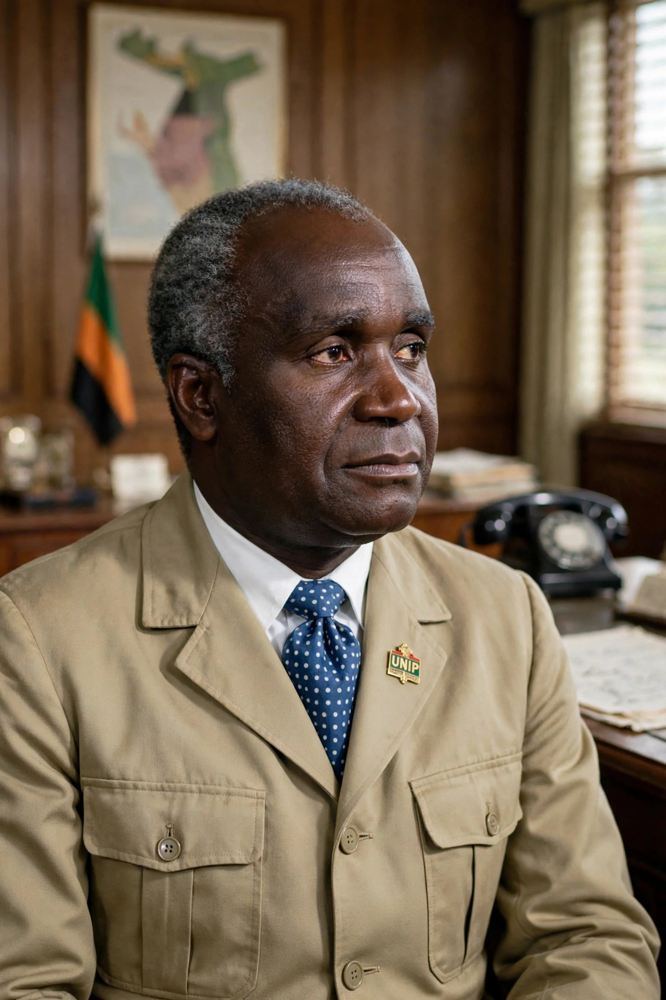

| Zambian Humanism | |
 Kenneth Kaunda, architect of Zambian Humanism | |
| Founder | Kenneth Kaunda |
|---|---|
| Period | 1967–1991 (state ideology) |
| Key texts | Humanism in Zambia and a Guide to Its Implementation (1967) |
| Influences | African socialism, Christian ethics, communal traditions |
Zambian Humanism was the official national ideology of Zambia under President Kenneth Kaunda, articulated from 1967 until the end of the one-party era in 1991. It was a form of African socialism that sought to combine traditional communal values — mutual aid, extended-family solidarity, and consensus — with Christian morality and a mixed economy in which the state controlled key industries while affirming human dignity as the centre of all policy.
Kaunda set out the philosophy in Humanism in Zambia and a Guide to Its Implementation (1967) and later volumes. He argued that pre-colonial African society was inherently humanist and egalitarian, organised around the extended family and the belief that "man was at the centre of all activity". Colonialism and capitalism, in his view, had introduced selfish individualism that Zambian Humanism would correct.
Zambian Humanism underpinned the nationalisations of the Mulungushi (1968) and Matero (1969) reforms, which brought the copper mines and major firms under majority state ownership through parastatals such as ZIMCO. It also justified the United National Independence Party's one-party "participatory democracy" established in 1972, on the argument that multiparty competition was divisive and alien to African consensus traditions.
Critics charged that the philosophy was vague, that it legitimised authoritarian rule and economic mismanagement, and that state control bred inefficiency and corruption. Zambia's economy declined sharply with copper prices in the 1970s–80s. After Kaunda's electoral defeat in 1991, President Frederick Chiluba's government abandoned Zambian Humanism in favour of market liberalisation. The philosophy remains a reference point in Zambian political thought and is compared with Nyerere's ujamaa in Tanzania and Nkrumah's consciencism in Ghana.